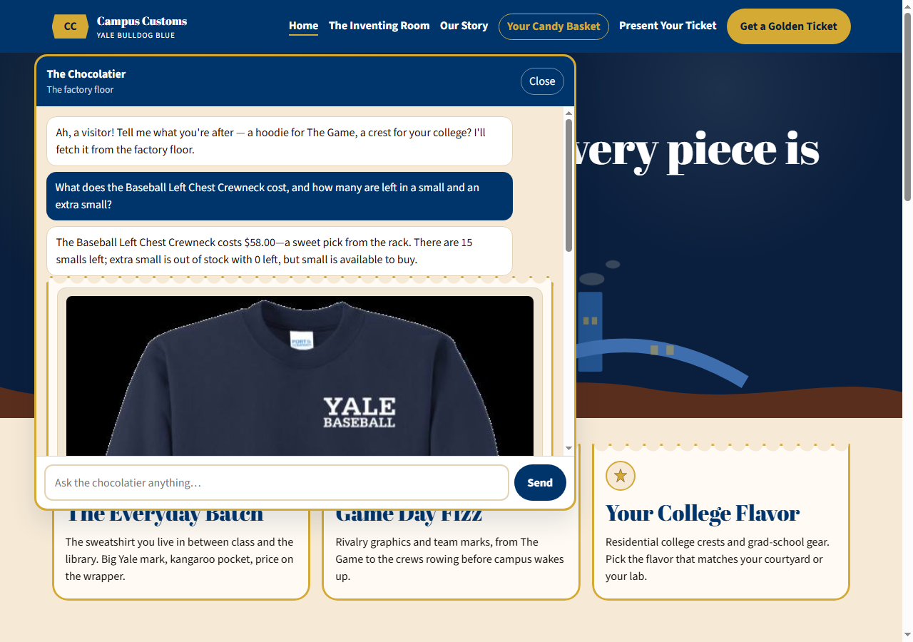
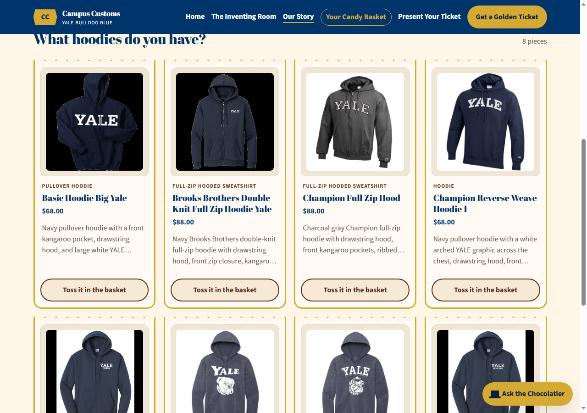
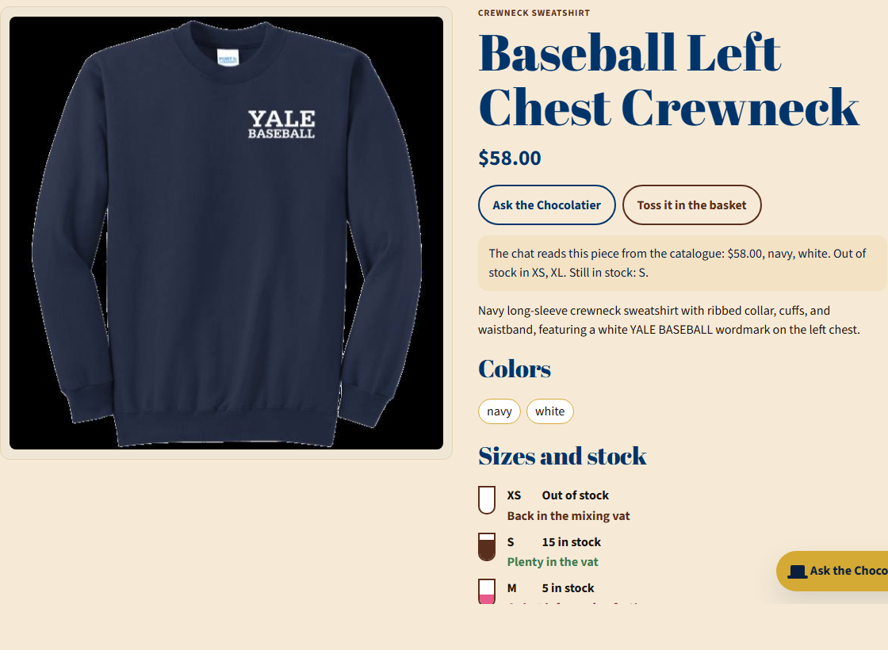

Three checks of the live shop. Each section is the check, the screenshot, and what that screenshot proves.

The question asked for the price of the Baseball Left Chest Crewneck and the counts in small and extra small. The reply says $58.00, 15 smalls left, and extra small out of stock at 0. Those figures are the catalogue price and the inventory rows for that item, and the chat also shows the matching product card.

Asking “What hoodies do you have?” put eight pieces on the page under that question. The cards use catalogue names and prices, including Basic Hoodie Big Yale at $68.00 and the Brooks Brothers and Champion full-zip hoodies at $88.00.

On the item page, the shop shows a catalogue line before anyone types: $58.00, navy and white, out of stock in XS and XL, still in stock in S. The size list matches it, with S at 15 and M at 5. Ask the Chocolatier opens the chat about this piece.